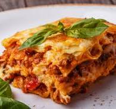

Lasagna

Description
Everyone loves a good lasagna, right? It's a great way to feed a crowd and a perfect dish to bring to a potluck. It freezes well. It reheats well. Leftovers will keep you happy for days.
Simply Recipes reader Alton Hoover sent me his favorite recipe for lasagna which he has been cooking since his college days. Alton's original recipe created enough lasagna for a small army so I halved it. What is posted here will easily serve eight people.
Ingredients
- 1 cup of rice
- 2 tablespoons of olive oil
- 1 onion, chopped
- 2 cloves of garlic, minced
- 1 bell pepper, chopped
- 1 can of diced tomatoes
- 1 teaspoon of paprika
- Salt and pepper to taste
- Fresh parsley for garnish
Steps
- Rinse the rice under cold water and set aside.
- Heat the olive oil in a large pan over medium heat.
- Add the chopped onion and garlic, and sauté until softened.
- Add the chopped bell pepper and cook for another 3-4 minutes.
- Stir in the diced tomatoes and paprika, and bring to a simmer.
- Add the rinsed rice to the pan and stir to coat with the tomato mixture.
- Pour in 2 cups of water, bring to a boil, then reduce heat to low and cover the pan.
- Cook for 15-20 minutes, or until the rice is tender and the liquid is absorbed.
- Season with salt and pepper to taste.
- Garnish with fresh parsley before serving.